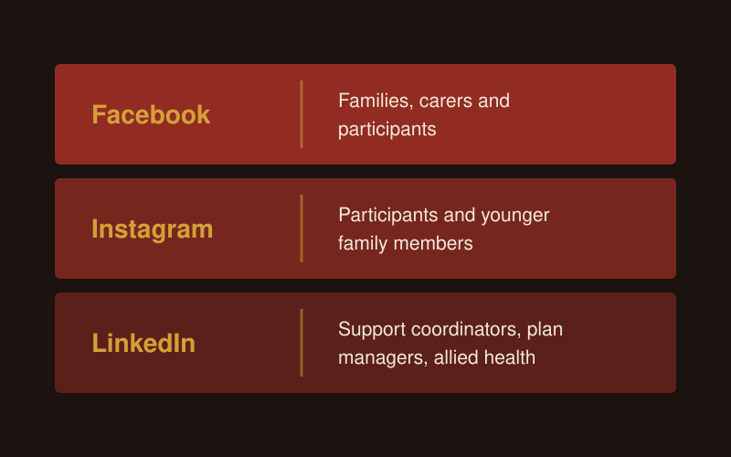
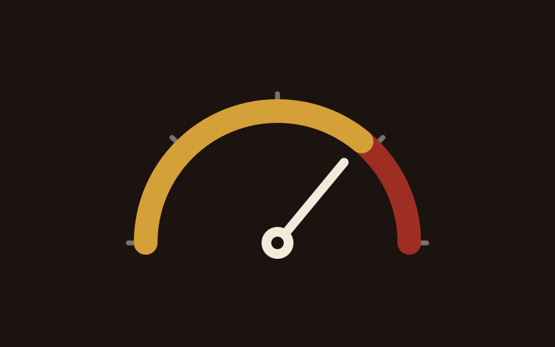
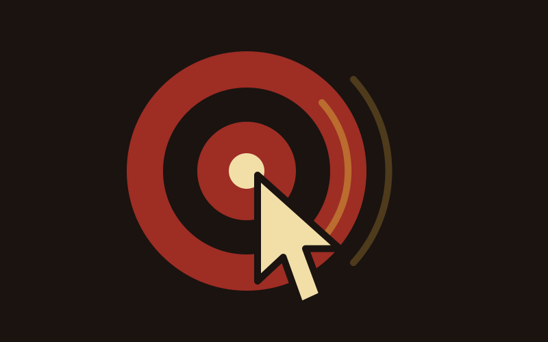
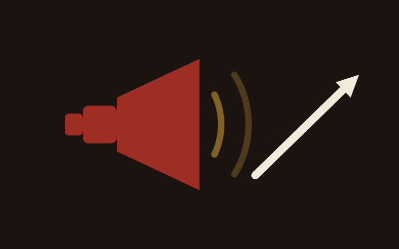
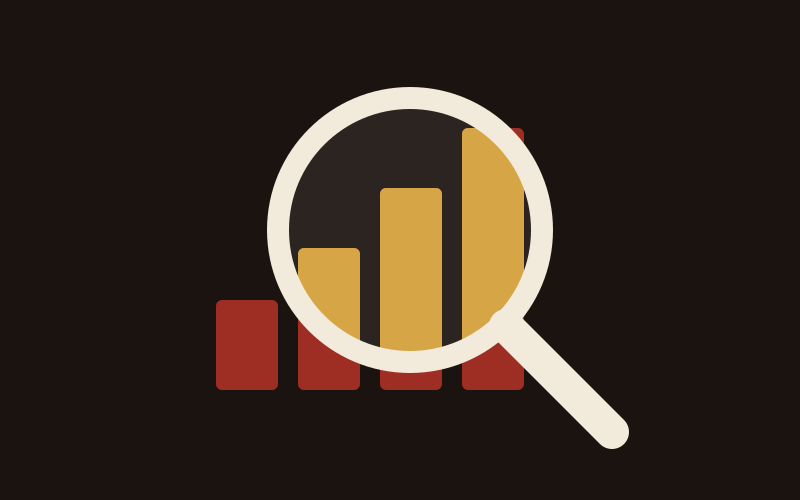

NDIS Digital Marketing & Acceleration
Digital is how small and medium providers get found. Here is what belongs in the plan.
Read more
Social media grows an NDIS business when you get your message clear first, post real photos and phone video of your team, and use Facebook and Instagram for families and LinkedIn for referrers. Get written consent before anything shows a participant. Then judge it by enquiries and referrals, and ignore the likes.

Yes, because families and coordinators look you up before they call. Someone who sees your ad, or gets your name from a support coordinator, checks your Facebook page or LinkedIn next. A page with no posts since 2023 gives them nothing to go on.
I see organic social as part of the sales funnel for providers. As I said about the providers I work with, "People discover them when we're running paid ads. So something needs to be sitting there relevant." You don't need to become the next TikTok trend. You need a page that looks alive when someone checks.
Time is the objection I hear most. My answer is to post something plain anyway: "If you're not showing up to the gym, you're not even getting the reps in, let alone getting a six pack."
Sort out your message. A mentor gave me this line and I use it constantly: "Once you have a great song, it's time to put it on the radio." Social media is the radio.
I take every provider through five steps to market:
"If you skip any of these steps and try and go to step five, you will inevitably waste money." Once you know who you serve and what you offer them, picking the platform gets easy.
I have seen good creative on a clear message take cost per lead from around $100 down to $50 or even less.
Facebook and Instagram reach participants and families. LinkedIn reaches support coordinators, plan managers and allied health. Write for each one separately.
| Platform | Who you reach | What to post |
|---|---|---|
| Families, carers and participants, plus local community groups. Support coordinators and professionals still use this but I wouldn't suggest this first. | Team introductions, day-in-the-life posts with consent, how to access your services | |
| Participants and younger family members | Short phone videos and real photos of your team at work | |
| Support coordinators, plan managers, allied health, hospital discharge teams | Vacancy updates, team capability, the founder's views on the sector |

On Facebook and Instagram, talk to the person: "you" and "your home". On LinkedIn, talk to the referrer: "your client" and "the participant you support". Mixing the two up is the most common copy mistake I correct.
On LinkedIn, put your effort into personal profiles. See NDIS LinkedIn profile building.
Post real people doing real things, filmed on a phone. In a sector where people choose who comes into their home, I back raw content every time. As I say about my own videos, "the most unpolished raw ones often do better because people are like, oh, Chris is a real dude, he's not some marketing hack."
One founder I work with filmed a quick, unedited phone tour of a location. That one video drove 8 enquiries, more than months of polished ads. The kit was a gimbal for around $149 and a clip-on mic.
Ideas that work for providers:
Test formats yourself. "I often still see static ads with one image outperform videos. Every week I still see that happen. So there's no blanket rule."
And expect your first posts to be rough. "Everyone sucks to start. If you never kicked a ball, the first effort's really bad." I made this mistake myself: I built a studio, then told myself I would start once I had filled the shelves. Picking up the phone would have got me going months earlier.
AI tools can help with the clipping and captions. Among Australian small businesses using or planning to use AI, 54% use it for content generation, according to the National AI Centre. Keep a person checking every post before it goes out, and never put participant details into an AI tool.

Share nothing that identifies a participant without their written consent for that specific use. The rules below apply to your company pages, your ads and your staff's own accounts.
Use real photos only, never stock or AI-generated people or homes. And give your staff a one-line policy: when in doubt, leave it out.
Run planned ads once the basics are in place, so you choose the audience, the location and the action.
I am channel agnostic. "Me and Zuckerberg aren't mates. I'm not giving him money if I don't think it's working." I judge each case on its numbers.
Providers ask me where to put a small budget, say $500. My answer: "If your website sucks, if your messaging is not clear, if you don't have authentic content, I wouldn't even bother." Put that money into content first. Meta then builds awareness for services people are not searching for yet, and LinkedIn organic costs nothing.
When you do run ads, give each ad set 3 to 5 creatives, with at least one video, one carousel and one static image in every campaign. The detail is on the NDIS social media ads page.
Count enquiries and referrals. Ask every new enquiry how they found you, and record the answer in the same place you track intake.
If posts get engagement but no enquiries, your offer is lost inside the story content. Keep the story posts running, then retarget the people who engaged with direct ads that say "here's the service, enquire now". Check your tracking fires on every form and phone click before you judge the results.
Give it months. A coordinator who watches your posts for half a year may refer a family next month.
For organic content planned and run for you, see NDIS social media and content.
Social is one of several channels I run as an NDIS marketing agency working with providers Australia-wide.
Three posts a week on Facebook and Instagram, and two to three on LinkedIn, is the bare minimum. More is better, as long as your team can keep it going. If you are starting from zero, begin with one good post a week, then build up to that minimum once posting is a habit. Steady posting builds more trust than a burst of daily posts followed by weeks of silence.
Only with written consent for that specific use from the participant or their guardian, given before you post. The OAIC treats a photo that shows someone's disability or health status as sensitive information, and the Privacy Act covers health service providers regardless of turnover. The NDIS Code of Conduct also requires you to respect participants' privacy. If you can't get consent, post staff and team content instead.
Not without written consent from the NDIA. Its logo guidelines say nobody can use the NDIS logo on publicity or advertising without that consent. Registered providers can use the "I/we heart NDIS" or "I/we support NDIS" logos with the "Registered Provider" tagline. Never write "NDIS approved" or "100% NDIS funded", or suggest any link to the NDIA.
Get your message and website right first, then run planned ads instead of one-off boosts. A campaign lets you choose the audience, the location and the action, and test 3 to 5 creatives at once. If your website or message is unclear, a small budget does more good spent on content. Judge any spend by the enquiries it brings in.
Expect months. Organic posts build trust with families and coordinators slowly, and a referral often comes long after someone first saw your page. Paid social reaches new people faster, but it works best when there is already a page full of real content for them to check. Ask every enquiry how they found you so you can see what social is producing.
Yes. The NDIS Code of Conduct applies to every worker, including what they post on their own accounts. Keep the policy short: no participant photos, names or details without written consent, no NDIS logo, no claims of NDIA approval, and when in doubt, leave it out. Then show staff what they can post, such as team photos and their own views on their work.

Digital is how small and medium providers get found. Here is what belongs in the plan.
Read more

Reaching participants takes more than showing up. How Google Ads connects you with people actively searching for your services.
Read more

How marketing and referrals work together to grow a provider, and how to tell which one is doing the work.
Read more

What SEO actually does for a provider, why it compounds, and how long it really takes.
Read more
Book a free growth audit and I'll show you which platforms to focus on and what to fix first.